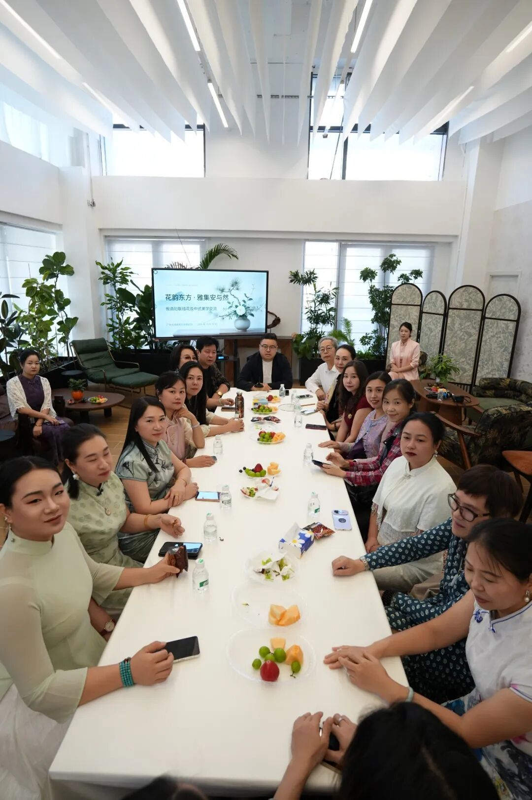
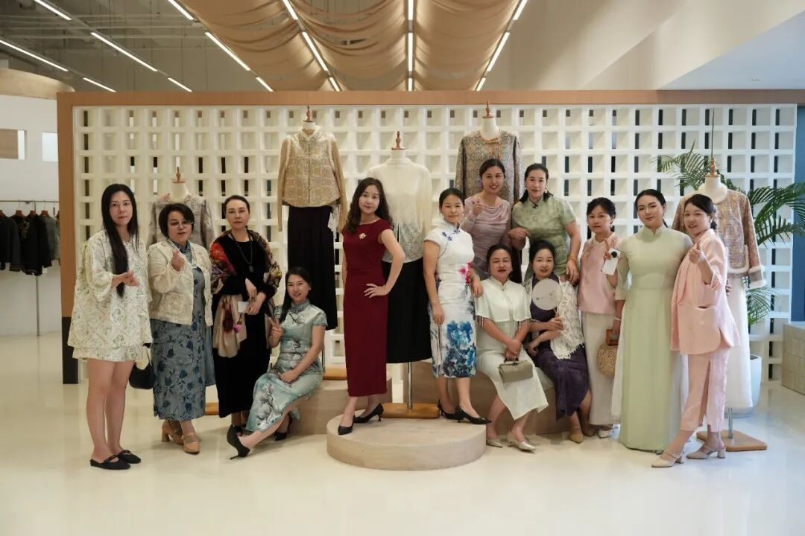
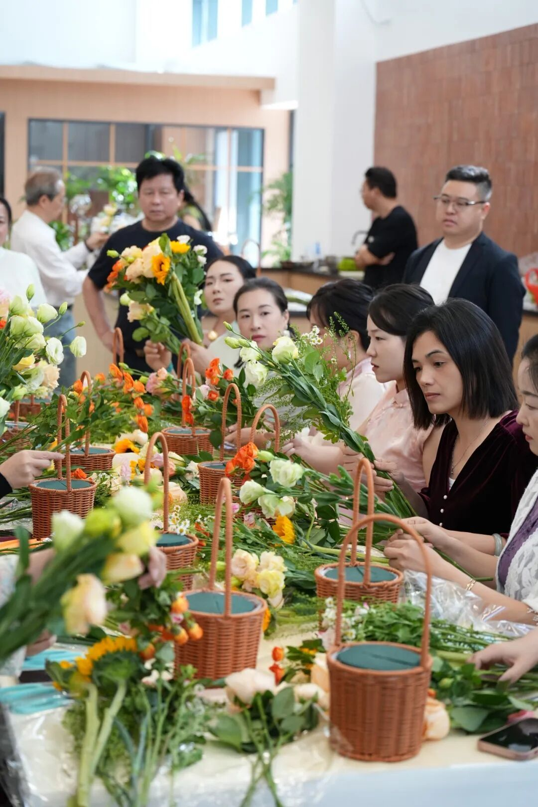
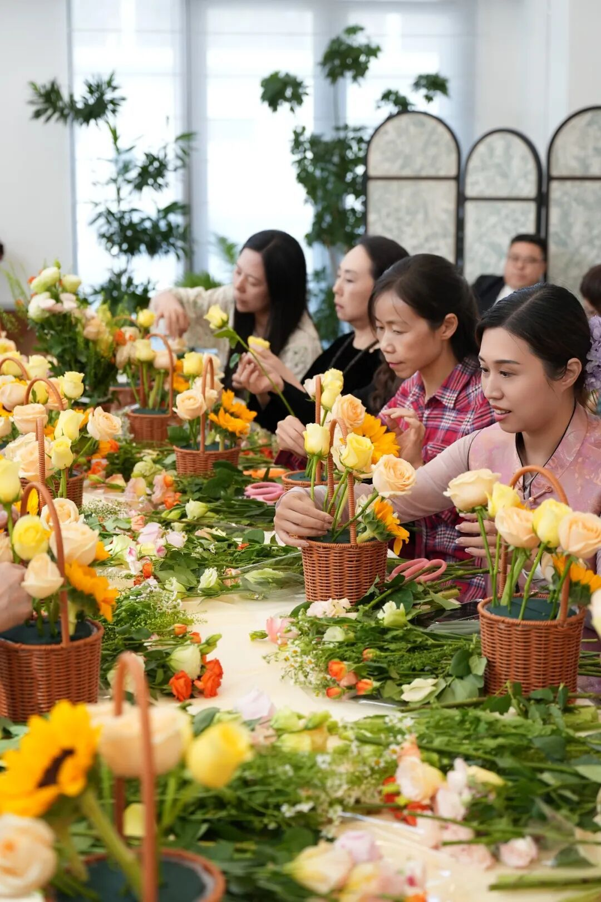
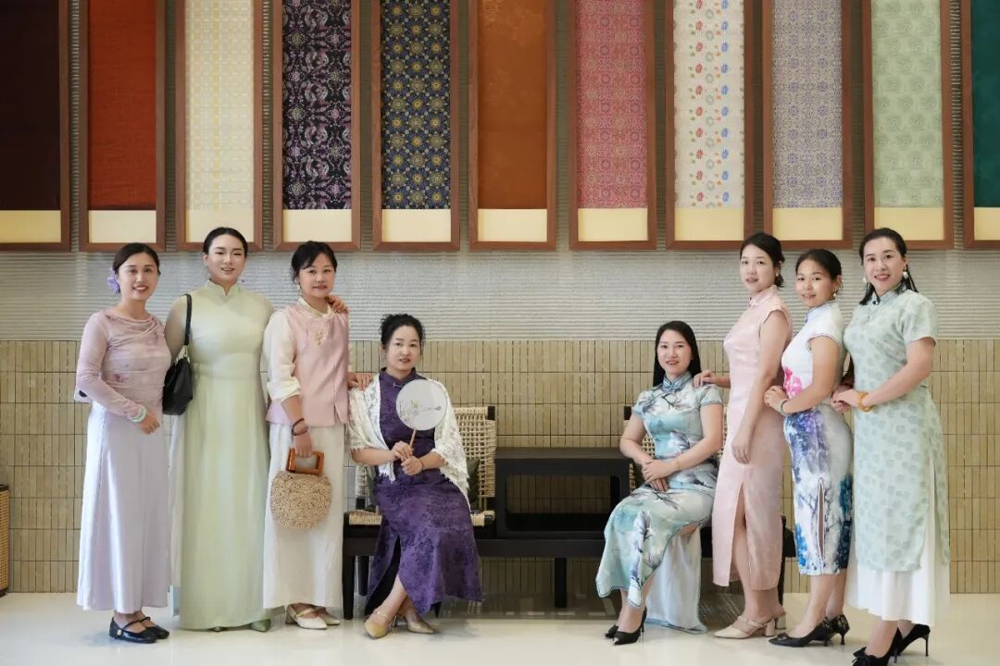
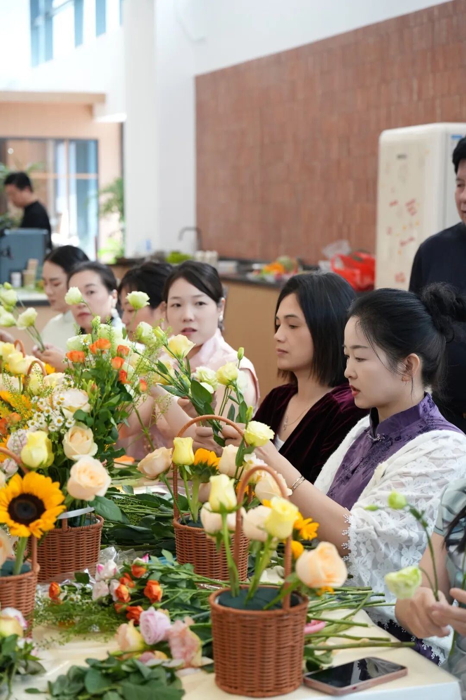
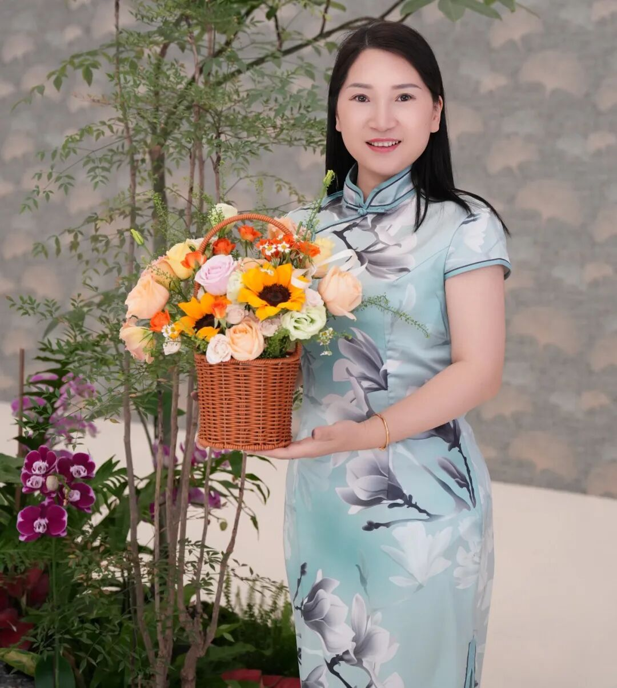
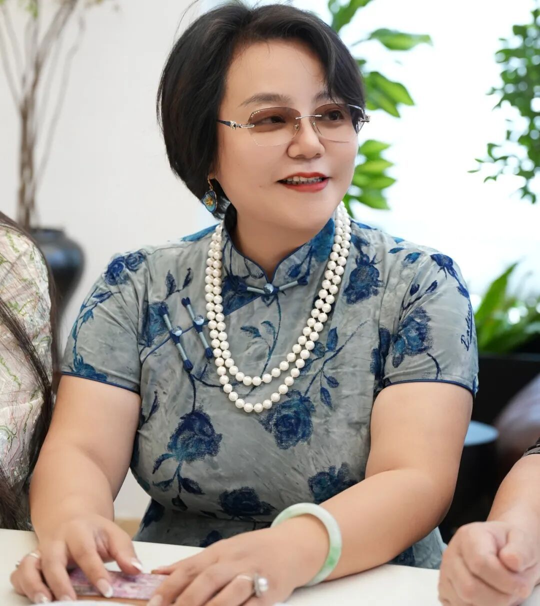
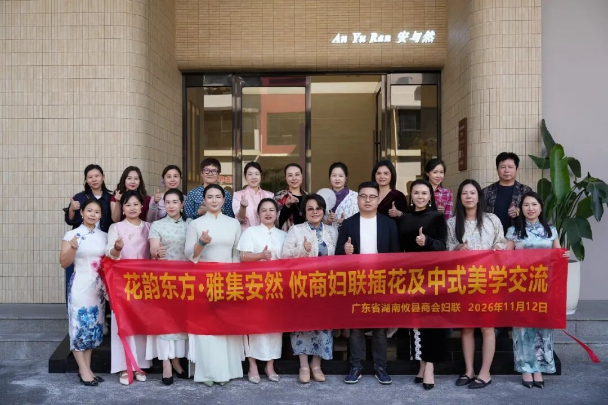

花韵东方绽芳华，雅集安然聚攸商。
岭南冬月，繁花不谢；番禺雅集，韵致悠然。2026年11月12日，广东省湖南攸县商会妇联「花韵东方·雅集安然」插花及中式美学交流活动，在番禺区安与然新中式（石基店）举行。活动由商会妇联主席王琼策划、全程组织并全额赞助全部费用。商会会长张成建、秘书长曹玉华、妇联主席王琼与商会女同胞及会员家属共二十余人齐聚一堂，共赴这场东方美学的雅致之约。
一、精心筹划显担当，午间餐叙暖人心
上午十一时前，与会人员悉数到场。这份全员准时的背后，是王琼主席事无巨细的前期统筹与周密安排——从场地甄选到流程设计，从师资邀约到物料筹备，从午餐安排到着装提示，每一个环节皆见匠心。作为商会妇联主席，她既运筹帷幄、擘画全局，又慷慨解囊、全额赞助，将组织者与赞助方的双重角色演绎得淋漓尽致，生动诠释了新时代商会女性领导者的格局与情怀，也为商会妇联工作的开展树立了标杆。
午间，大家共进丰盛午餐，餐叙环节温馨而热烈。席间，乡音亲切、笑语盈盈，同仁们围绕商会发展、家庭生活与女性成长畅所欲言。张成建会长对妇联工作给予充分肯定，对王琼主席的精心组织与无私奉献表示高度赞赏；姐妹们亲切交流，现场气氛融洽而热烈。一顿丰盛的午餐，不仅让味蕾得到满足，更让情感在杯盏之间升温、让共识在交谈之中凝聚，为整场活动铺就了温暖底色。

二、霓裳雅韵承文脉，花艺匠心传东方
午餐过后，活动进入核心环节。全体女同胞身着旗袍或中式朝代服装款款登场，衣袂翩跹间，东方女性的温婉气韵与中华服饰的典雅之美交相辉映，现场氛围古意盎然、雅致非常。这一精心设计的着装环节，绝非简单的形式点缀，而是以衣冠上国的礼仪传统为切入点，唤醒参与者对中华美学生活方式的深层认同。

随后，由王琼主席特邀的专业插花老师登台授课。老师从花材选取、色彩搭配、构图章法到意境营造，层层递进、娓娓道来，既授技法之精妙，更传美学之精髓。在老师的悉心指导下，女同胞们纷纷动手体验，修枝剪叶、错落布局，将一花一草化作指尖的诗意表达。现场花香氤氲、笑语盈盈，一件件风格各异、意趣盎然的插花作品渐次呈现，或疏朗清雅，或繁盛热烈，皆各得其妙、各彰其美。


这场从听到做、从学到创的沉浸式体验，让中华插花艺术不再是书卷中的遥远符号，而成为可触可感、可亲可近的生活美学。

三、四时雅集凝情谊，多方共赢谱新篇
整场活动历时四个多小时，时间虽有限，意蕴却无穷。从午间餐叙的亲切交流，到霓裳华服的仪态之美，再到插花技艺的匠心之趣，每一个细节都在潜移默化中拉近彼此的距离、厚植同乡的情谊。大家既习得了插花之技，更愉悦了身心、陶冶了情操；既感受了中华优秀传统文化的博大精深，更增强了作为新时代女性的文化自信与审美自觉。
更重要的是，此次活动以文化为纽带、以美学为桥梁，将商会妇联的组织优势、主席的奉献精神与女同胞的参与热情有机融合，探索出一条以活动聚人心、以文化促凝聚的妇联工作新路径。它既是一次技艺的传授、一次美学的启蒙，更是一次情感的凝聚、一次力量的汇聚。通过这样的活动，商会妇联的桥梁纽带作用得以充分彰显，女同胞们的归属感、获得感与幸福感切实提升，商会大家庭的向心力与凝聚力亦随之增强。


四、小活动映照大格局，雅集间彰显深意
纵观整场活动，其意义远不止于一次插花体验或一场美学讲座。在商会建设层面，它展示了商会领导班子对妇联工作的高度重视与大力支持，体现了商会以会员为本、以服务为要的办会理念；在文化传承层面，它以中式服装与插花艺术为载体，让中华优秀传统文化在当代商会生活中焕发新的生机；在女性发展层面，它为女同胞们提供了学习交流、展示风采的平台，激励大家在事业与生活的双重舞台上绽放光彩。
这一切的背后，王琼主席的精心组织与全额赞助居功至伟。她以女性领导者特有的细腻与魄力，将一场活动办出了品位、办出了温度、办出了影响，充分展现了新时代商会妇联干部的责任担当与奉献精神，也为商会妇联工作的持续深化注入了强劲动力。

花韵东方·雅集安然，八个字道尽此次活动之精魂。东方之韵，在花间流淌；安然之境，在雅集中生发；餐叙之情，在杯盏间升温。半日时光虽短，却足以在每一位参与者心中播下美的种子、留下暖的记忆。广东省湖南攸县商会妇联将以更多高品质、有温度的活动凝聚巾帼之力、彰显巾帼之美，为商会高质量发展贡献不可或缺的她力量。
